동일 지표를 논문(원본 그래프) · 1차 실험(Live Wikipedia ReAct) · 현재 실험(Cohere 벡터DB ReAct) 세 출처로 나란히 비교. 환경이 다르므로 절대 시간이 아니라 비율·구성·분포 형상을 본다.
💡 아래 각 지표(①~⑥)마다 '자세한 해석' 블록이 있어, 이 용어들이 실제 그래프에서 어떻게 쓰이는지 풀어 설명한다.
hotpot_evaluate_v1.py와 동일하게 맞췄다(소문자·관사/구두점 정규화 후 비교). EM은 그대로 두고 F1을 추가했다.
hotpot_evaluate_v1.py(AgentBench hotpot_evaluate.py)를 byte-for-byte 그대로 포팅해
(repro/measurement/eval.py), 우리 EM·F1이 논문 채점기와 정확히 일치한다.
EM은 정규화 후 완전 일치면 1, F1은 같은 정규화를 거친 답을 토큰으로 쪼개 겹침을
2·P·R/(P+R)로 0~1 점수화한다(yes/no/noanswer는 F1도 완전 일치만 인정).
| 지표 | 📄 논문 | 📊 1차 (Live Wikipedia, n=50) | 📊 현재 (Cohere VDB + rerank, n=139) |
|---|---|---|---|
| ① retrieval-time fraction (tool/e2e) | idle 54.5% / tool 30.2%* | 44.8% | 31.3% |
| ② latency 구성 (LLM / tool) | 69.4% / 30.2%* | 55% / 45% | 68% / 31% |
| ③ calls / query (LLM · tool) | 9.2× (CoT 대비)* | 8.84 · 8.54 | 5.67 · 5.50 |
| ④ 정확도 (EM / F1) | 산점도(표 없음) | 32.0 / 38.5% | 30.9 / 41.9% |
| ⑤ latency tail (p95/p50) | p95 20.7s | 3.15× | 4.66× |
| ⑥ prefill / decode (추정) | 4.7% / 74.1%* | 26% / 74% | 39% / 61% |
* 논문 ①②③⑥ 값은 에이전트·벤치 평균(ReAct-HotpotQA 단독 아님). 아래 각 행 캡션의 ⚠️ 참고. · 현재 = Cohere VDB + rerank(n=139) — rerank로 검색을 정당하게 무겁게 만들어 retrieval fraction이 dense-only(11%, 50문항) 대비 ~31%로 오르고 ①이 1차·논문대와 가까워졌다(⑦ 참고).
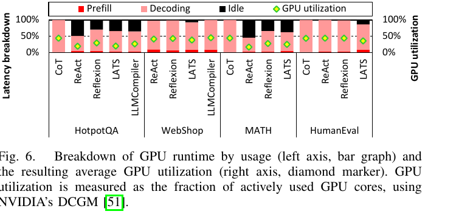
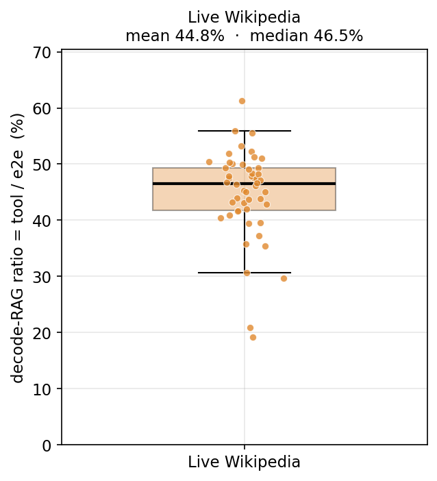
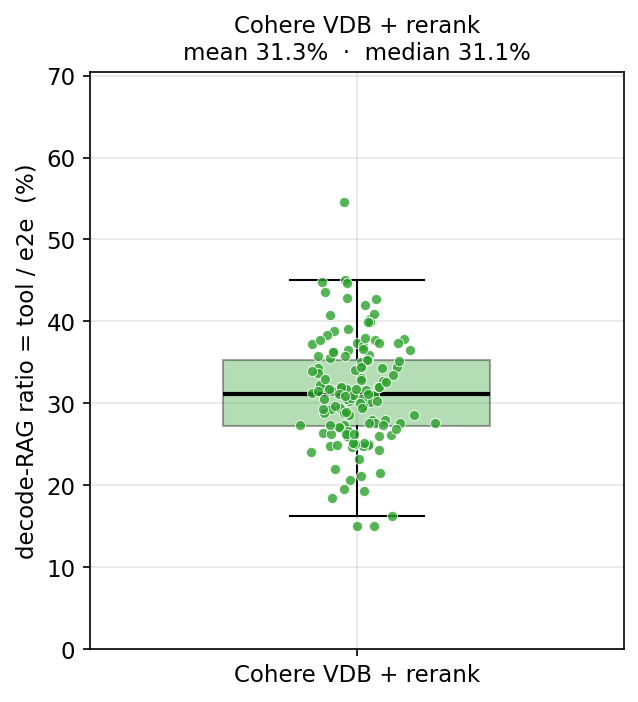
논문 GPU idle 54.5%(HotpotQA, retrieval 대기) · tool share 30.2%(평균) · 1차 44.8% (median 46.5%) · 현재 31.3% (median 31.1%). 현재는 빠른 dense 검색에 rerank를 더해 retrieval를 정당하게 무겁게 만든 결과 — dense-only일 땐 11%로 떨어졌으나, rerank로 ~31%가 되어 논문 tool share 30.2%·1차 45%대와 같은 자릿수로 돌아왔고 재현 가능하다. ⚠️ 환경이 달라 절대값 비교 불가 — 형상·비율만. 논문 30.2%는 에이전트·벤치 평균. 현재 n=139.
tool ÷ e2e = 한 질문을 푸는 전체 시간 중 검색 응답을 기다린 시간의 비율. ReAct는 생각 → 검색 → 관찰을 반복하는데, 검색을 기다리는 동안 LLM(GPU)은 논다(idle). 이 노는 비율이 곧 decode-RAG가 숨길 수 있는 비효율의 상한이다.
tool 총시간 = 검색당 시간 × 검색 횟수. 백엔드를 바꿔가며 이 둘이 어떻게 변하는지:
| 검색당 시간 | 검색 횟수/질문 | tool 총시간 (med) | e2e (med) | = 비율 | |
|---|---|---|---|---|---|
| 1차 Live Wiki (n=50) | ~2,004 ms | 8.54회 | 12.2 s | 27.7 s | 44.8% |
| dense-only (n=50) | ~415 ms | 4.96회 | 1.2 s | 10.5 s | 11.1% |
| 현재 +rerank (n=139) | ~1,946 ms | 5.50회 | 6.3 s | 20.3 s | 31.3% |
dense-only는 검색이 너무 빨라(~415ms) 비율이 11%로 급락했다 — "RAG가 너무 빠르다"(⑦). 그래서 rerank(FAISS top-50 → cross-encoder → top-5)를 더해 검색을 정당하게(인위적 지연이 아니라 실제 연산으로) ~1,946ms로 무겁게 했다. 그 결과 tool이 1.2s→6.3s로 커지고 비율이 11% → 31%로 올라 논문 tool share 30%·1차 45%대와 같은 자릿수로 돌아왔다. 핵심: 검색을 의미있게 무겁게 만들어야 decode-RAG로 숨길 여지가 생긴다.
둘 다 느린 라이브 검색이라 같은 ~45–55%대(패턴 일치). 미세 차이는 측정 방식(논문 = GPU idle, DCGM 하드웨어 측정 / 1차 = tool÷e2e wall-clock)과 LLM 속도(A100/vLLM은 LLM이 빨라 검색 대기 비중↑, M3/Q4는 LLM이 느려 분모 e2e가 커지며 비중↓) 때문.
1차 ~45% = 상한(비재현, 라이브 API 드리프트), 현재 ~11% = 재현 가능한 하한(로컬 FAISS만이면 ~2%). 두 끝점으로 bracket하면 앞으로 만들 prefetch/overlap 기법의 잠재 이득 범위를 정량화할 수 있다. 역설: 좋은 검색일수록 이 비율이 낮아진다 → decode-RAG의 동기는 검색이 느리거나 코퍼스가 큰 환경에서 더 강해진다.
⚠️ 논문 막대(GPU idle, DCGM)와 우리 box(tool/e2e, wall-clock)는 정의가 달라 "같은 축 정밀 비교"가 아니라 형상·자릿수 비교다. 현재는 139문항, 1차는 50문항 표본 기반.
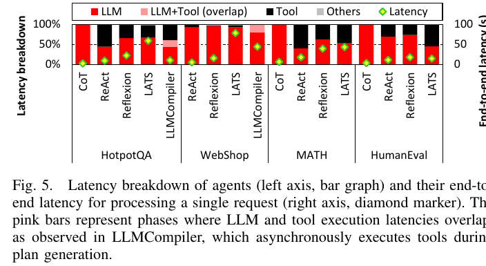
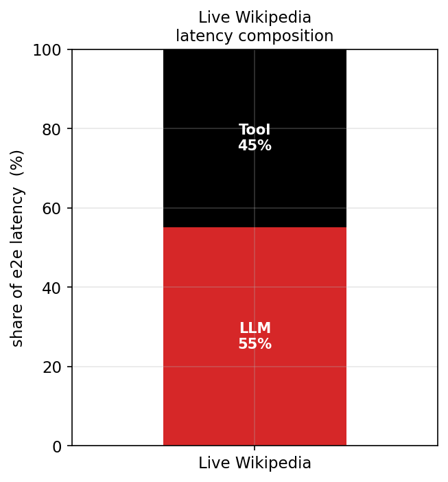
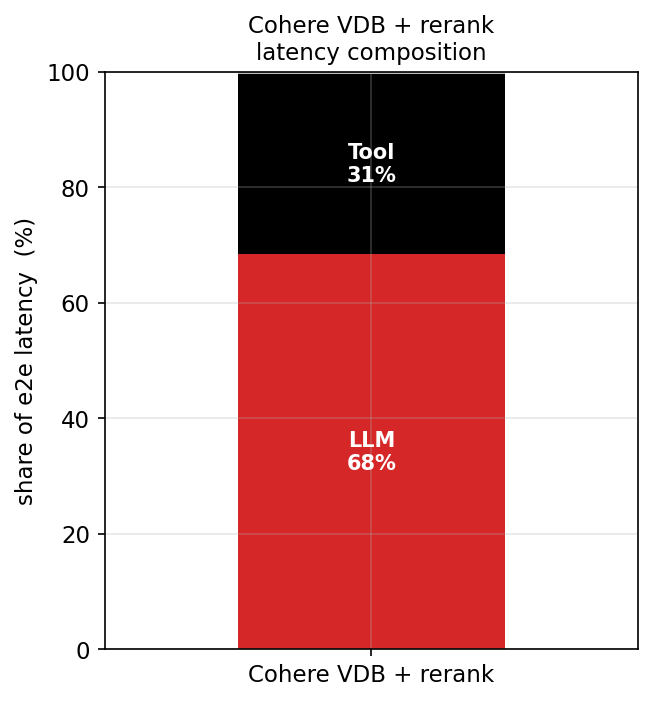
논문 LLM 69.4% / tool 30.2% (평균) · 1차 LLM 55% / tool 45% · 현재 LLM 68% / tool 31%. rerank로 tool 조각이 다시 커져(11%→31%) 현재 68/31이 논문 69/30과 거의 일치한다. ⚠️ 논문값은 5종 에이전트·4벤치 평균. 우리는 ReAct-HotpotQA. 현재 n=139.
한 질문의 전체 처리 시간(e2e)을 100%로 놓고, 그 시간이 어디에 쓰였는지 쌓아올린(stacked) 막대다. 🔴LLM(생각·추론 계산) + ⬛Tool(검색 대기) + 회색 overhead가 합쳐서 100%. ①이 'tool 조각 하나'만 따로 본 것이라면, ②는 그 tool + 나머지(LLM)까지 전부 보여준다. 그래서 ②의 tool% = ①의 평균 비율과 같다(1차 45%≈44.8%, 현재 31%≈31.3%).
dense-only일 땐 검색이 ~5배 빨라(2,004→415ms) tool이 11%로 쪼그라들고 LLM이 88%를 먹었다. 여기에 rerank(cross-encoder 연산)를 더해 검색을 ~1,946ms로 무겁게 하니 tool 조각이 31%로 커졌다. 전체가 100%라 tool이 커진 만큼 LLM 비중은 88%→68%로 내려와 논문 69/30 구성과 거의 일치한다.
검정(tool) 조각이 클수록 = LLM이 노는 시간이 크다 = decode-RAG로 숨길 여지가 크다. dense-only(11%)는 여지가 거의 없었지만, rerank로 31%까지 키워 숨길 여지를 의미있게 확보했다. 이게 ⑦에서 hop별 retrieval≈decode(1:1)를 맞춘 것과 같은 맥락이다 — decode-RAG 기법을 실험할 토대가 마련됐다.
⚠️ 논문값은 5종 에이전트·4벤치 평균이라 ReAct-HotpotQA 단독값이 아님. overhead는 거의 0. 현재 n=139, 1차 n=50 표본.
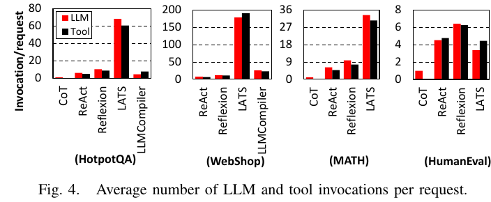
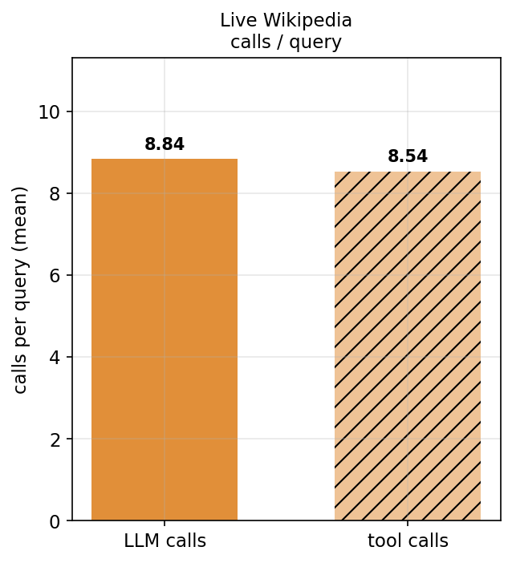
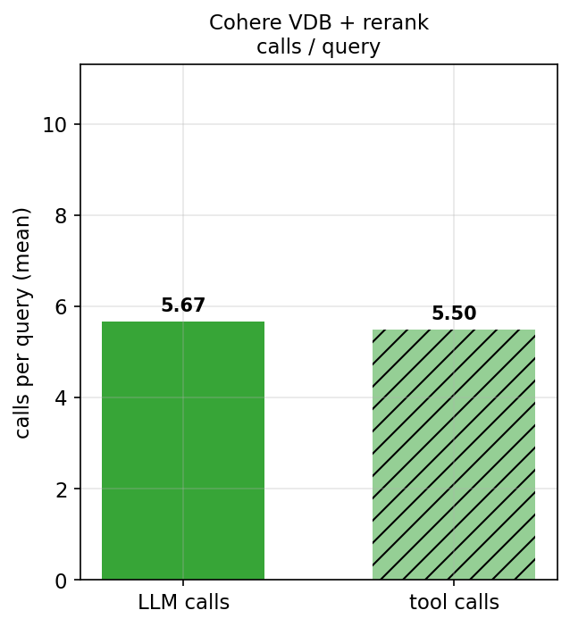
논문 도구 에이전트는 CoT 대비 LLM 호출 9.2×(LATS 71×) · 1차 LLM 8.84 / tool 8.54 · 현재 5.67 / 5.50. 커버리지 높은 dense+rerank 검색이 더 적은 hop으로 정답에 도달(8.5→5.5회). ⚠️ 논문은 ReAct 절대 호출수를 표기하지 않음(비율만). ReAct는 구조상 LLM≈tool 호출. 현재 n=139.
한 질문을 푸는 데 LLM을 몇 번 부르고(왼쪽 막대), 검색 도구를 몇 번 호출했는지(오른쪽 빗금 막대)의 평균. ReAct는 생각(LLM 호출) → 검색(tool 호출) → 관찰을 반복하므로 구조상 LLM 호출 ≈ tool 호출이다.
Cohere 벡터DB는 의미 기반(dense) 검색이고 rerank로 관련도가 더 올라, 한 번에 더 관련된 문서를 가져온다. "다시 검색"이 줄어 hop 수가 감소한다(어려운 multi-hop 질문만 많이 돈다). 호출이 적다는 건 왕복(round-trip)이 적다 = 그만큼 idle도 적다는 뜻.
호출 횟수 = LLM↔검색 왕복 횟수 = decode-RAG가 끼어들(겹칠) 지점의 개수. 횟수가 많을수록(1차) 숨길 기회가 많지만 그만큼 비효율도 크다. 적은 호출(현재)은 효율적이지만 prefetch로 숨길 여지는 작아진다.
⚠️ 논문은 ReAct 절대 호출수 대신 비율(9.2×)만 제시. 현재 n=139, 1차 n=50 표본.
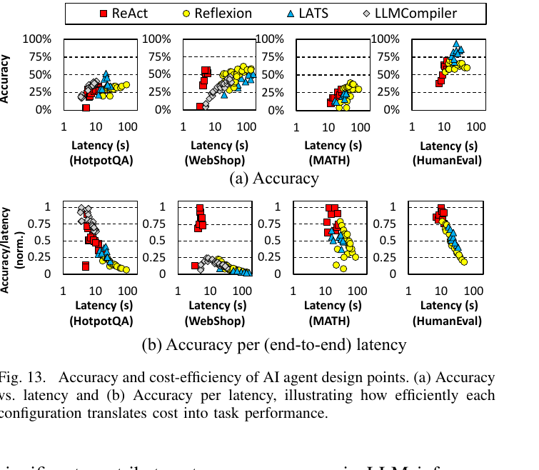
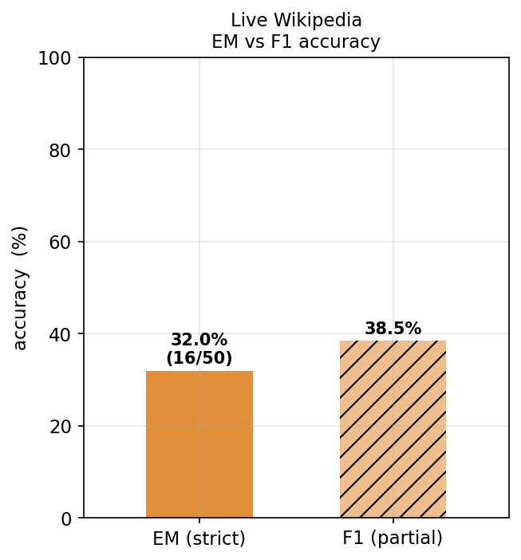
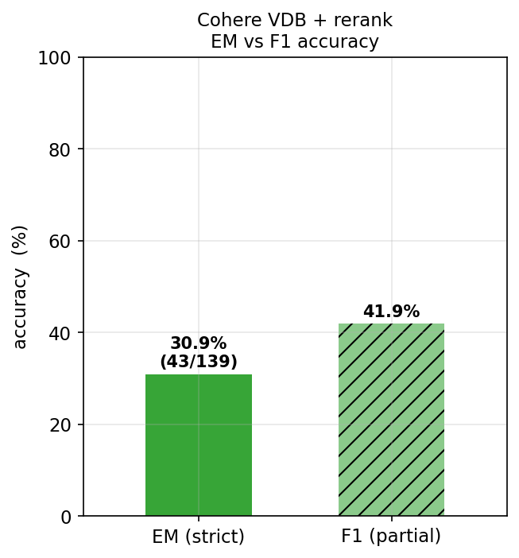
논문 Fig 13 산점도(ReAct는 표로 미기재) · 1차 EM 32.0% / F1 38.5% · 현재 EM 30.9% / F1 41.9%. 현재가 F1 +3.4%p(부분 점수 우위, "거의 맞은" 답이 더 많음)지만 EM은 −1.1%p로 비슷 — dense+rerank가 증거 질을 높여도 EM은 표본·난이도에 민감. ⚠️ 논문 Table III는 Reflexion/LATS만 수록. 표본 불일치(현재 n=139 vs 1차 n=50)라 직접 비교 아님 — 같은 첫 50문항 기준일 땐 거의 불변.
EM (Exact Match) = 모델 답이 정답과 정규화(소문자·관사/구두점 제거) 후 완전히 같아야 1점. 부분 점수가 없어 '거의 맞은' 답도 0점이다(예: '15 August 1843' vs '1843'). F1 = 답을 토큰으로 쪼개 겹치는 정도를 0~1로 주는 부분 점수(그 예의 F1은 0.5). HotpotQA 공식 지표가 이 둘이라 함께 본다.
키워드 기반 라이브 검색 → 의미 기반(dense)+rerank로 바꾸니 더 관련 있는 문서를 가져와 증거(context)의 질이 올라간다. 그 결과 F1(부분 점수)은 +3.4%p 올랐다 — 완전히 맞히진 못해도 '정답에 더 가까운' 답이 늘었다. EM은 −1.1%p로 사실상 비슷한데, 표본이 다르다(현재 n=139 vs 1차 n=50)는 점을 감안해야 한다(같은 첫 50문항만 보면 거의 불변이었다).
핵심: rerank로 검색을 무겁게(느리게) 만들었는데도 정확도는 떨어지지 않고 F1은 오히려 올랐다. 즉 retrieval를 키워 decode-RAG로 숨길 여지를 확보하면서도 정확도 손해가 없다 — "비율 맞추기"가 공짜에 가깝다.
⚠️ 표본 불일치(현재 n=139 vs 1차 n=50)라 EM/F1 직접 비교는 주의. EM은 부분 점수가 없어 보수적이라 F1을 함께 본다. 논문 정확도는 산점도에서 읽은 값.
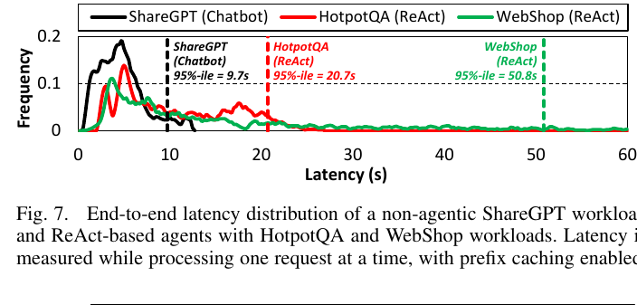
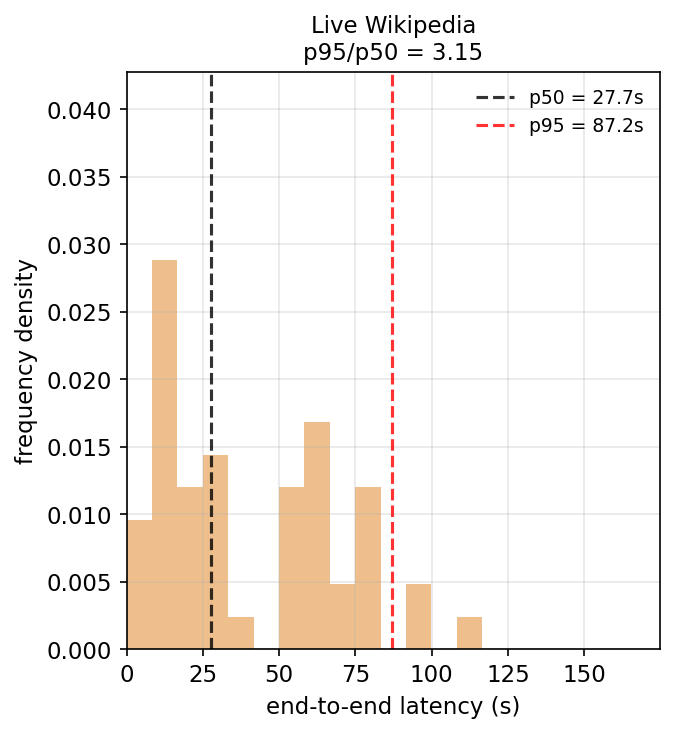
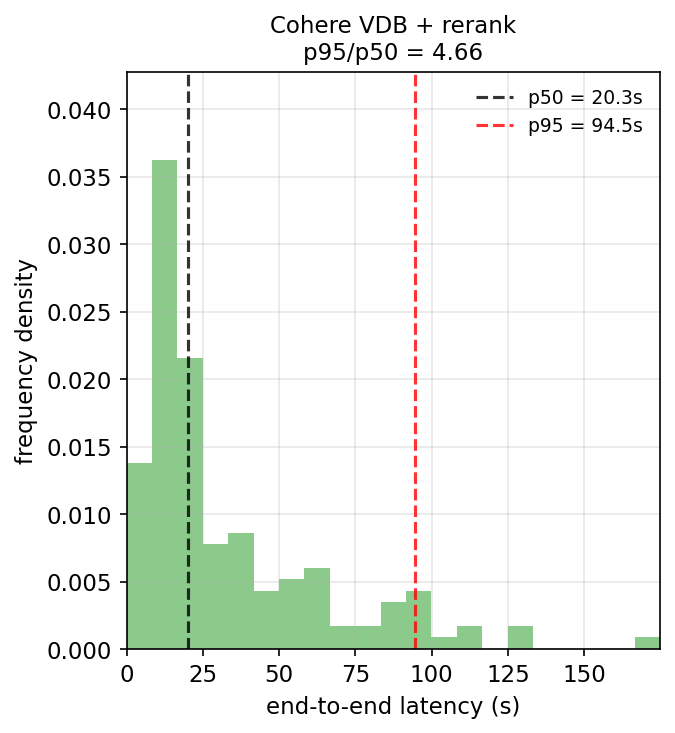
논문 ReAct-HotpotQA p95 = 20.7s (이 지표만 논문이 직접 제공) · 1차 p50 27.7s / p95 87.2s (3.15×) · 현재 p50 20.3s / p95 94.5s (4.66×). rerank가 검색을 무겁게 해 현재 p50이 20.3s로 올랐고(dense-only 10.5s 대비), 세 출처 모두 heavy-tail 형상을 재현. ⚠️ 절대 초는 환경차로 다름 — 꼬리의 형상/비율만 비교. 현재 n=139.
X축 = 한 질문의 e2e 지연(초), Y축 = 그 지연이 나온 빈도 밀도(histogram). 즉 "몇 초짜리 질문이 얼마나 많은가". 점선은 p50(중앙값, 검정)과 p95(상위 5%, 빨강).
대부분 질문은 빠른데(p50) 소수의 어려운 multi-hop 질문이 아주 느려서 오른쪽으로 긴 꼬리를 만든다. p95/p50가 클수록 꼬리가 두껍다(편차가 크다). 논문도 같은 heavy-tail을 보고함 — 정적 챗봇(ShareGPT)엔 없는 에이전트 특유의 현상.
현재는 rerank로 검색이 무거워져 p50이 20.3s(dense-only 10.5s보다 느림). 쉬운 질문은 적당히 느려지지만 어려운 multi-hop 질문은 검색을 많이 돌아 p95가 94.5s까지 늘어, 빠른 질문과 느린 질문의 격차가 벌어져 꼬리 비율이 커진다. 세 출처 모두 같은 heavy-tail 형상을 재현하는 것이 핵심.
꼬리(느린 질문)일수록 검색 왕복이 많아 LLM이 더 오래 논다 = decode-RAG 이득이 꼬리에서 가장 크다. 평균이 아니라 p95 같은 꼬리를 줄이는 것이 서빙(throughput) 관점에서 특히 중요하다.
⚠️ 절대 초는 환경(A100 vs M3)차로 직접 비교 불가 — 꼬리의 형상/비율만. 현재 n=139, 1차 n=50 표본.
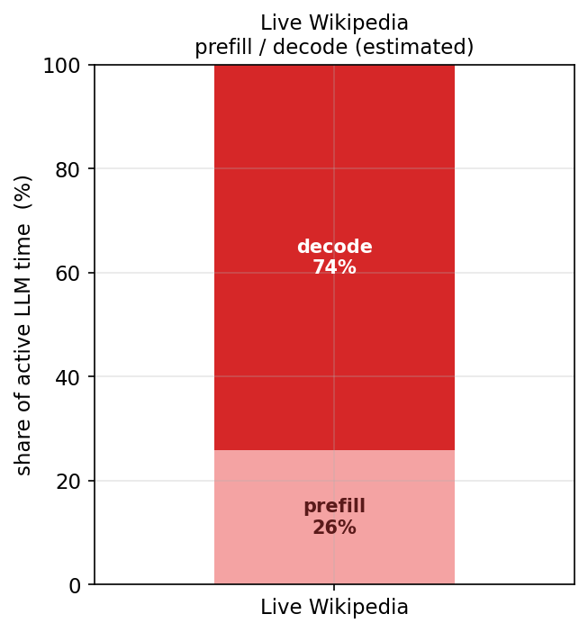
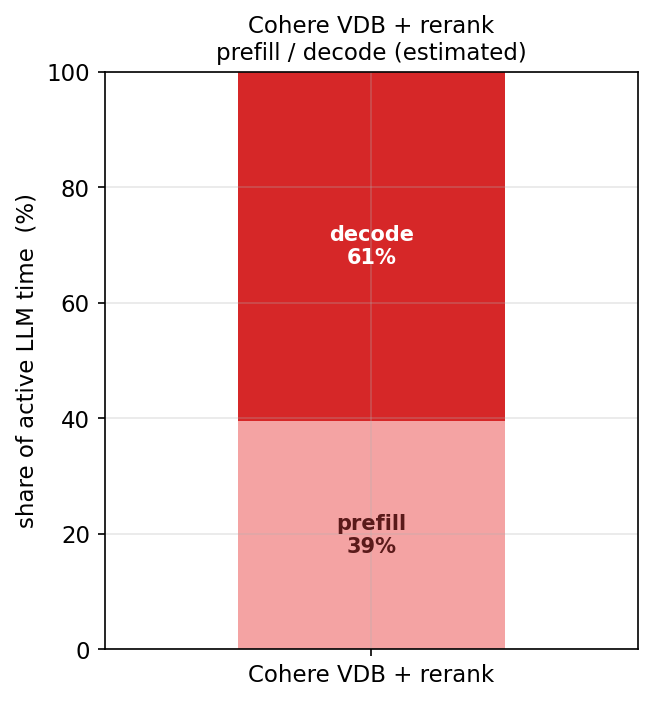
논문 active LLM 시간 중 prefill 4.7% / decode 74.1% ·
1차 prefill 26% / decode 74% · 현재 prefill 39% / decode 61%.
세 출처 모두 decode 우세 형상이 일치.
⚠️ 우리값은 wall-clock 추정치(*_estimate)이고 분모가 다름(논문=idle 포함 GPU 시간, 우리=active-LLM 시간) — 형상만.
②가 e2e 전체를 LLM/tool로 나눴다면, ⑥은 그중 LLM이 실제로 계산하는 시간만 떼어 prefill(입력 프롬프트를 한 번에 읽어들이는 단계)과 decode(답 토큰을 하나씩 생성하는 단계)로 나눈 것. 합쳐서 100%.
prefill은 입력을 한꺼번에 처리해 빠르고, decode는 답을 한 토큰씩 순차 생성하는데 연산량보다 메모리 대역폭에 묶여(memory-bound) 느리다(논문 §V-A). decode 우세면 "답을 생성하느라 시간을 쓴다"는 뜻. prefix caching 같은 최적화는 주로 prefill을 줄인다.
세 출처 모두 decode가 우세한 같은 형상 → 패턴 일치. 현재가 prefill 비중이 좀 더 큰 건 rerank로 가져온 검색 결과(context)를 매번 다시 읽어들이는 prefill 부담이 상대적으로 커서다.
decode가 우세하다는 건 decode 도중에 검색을 미리 당겨올(prefetch) 시간 여유가 충분하다는 뜻 — decode-RAG의 전제가 성립함을 보여준다. 다만 이 값은 정밀 측정이 아니라 추정치다.
⚠️ 우리 prefill/decode는 wall-clock *_estimate(추정치)이고
논문은 분모가 다름(논문=idle 포함 GPU 시간, 우리=active-LLM 시간). 절대값이 아니라 "decode 우세" 형상만 비교. 현재 n=139, 1차 n=50 표본.
기존 react_vectordb 50개 trace에서 198개 hop을 페어링(검색 span → 직후 LLM span). retrieval은 wall-clock(정확), decode는 두 가지로 측정: LLM 전체(prefill+decode)와 순수 decode(추정치, 신뢰 hop 152개).
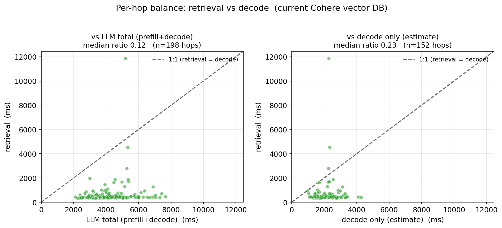
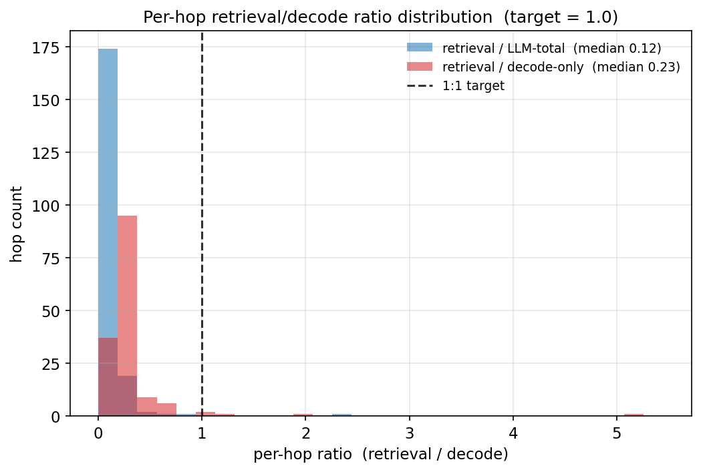
거의 모든 hop이 1:1 선 아래 — retrieval이 decode보다 훨씬 짧다. median 비율 0.12(LLM 전체 기준) / 0.23(순수 decode 기준). 즉 1:1로 맞추려면 retrieval을 약 8.6배(LLM 전체) ~ 4.3배(decode) 키워야 한다. ⚠️ 지금은 retrieval이 작아 decode-RAG로 숨겨도 이득이 작다 — 이게 "RAG가 너무 빠르다"의 정량.
decode-RAG는 한 hop의 검색 대기를 그 다음 LLM이 답을 생성하는 시간 뒤로 숨긴다. 따라서 hop마다 retrieval ≈ decode여야 검색을 거의 다 가릴 수 있다(이득 최대). retrieval이 너무 짧으면 숨겨도 미미.
인위적 지연(sleep)은 연구적으로 무의미하므로 실제 연산으로 retrieval을 키운다:
① reranking 추가(cross-encoder/Cohere rerank, hop당 +50~200ms) ② top_k 확대(5→50)
③ 코퍼스/인덱스 확대 ④ 무거운 임베딩. 현재 retrieval 438ms의 대부분이 Cohere API 네트워크라,
진짜 "검색 연산"을 늘리는 rerank가 가장 자연스럽다.
순수 decode만 겹친다면 ~4.3배, LLM 전체(prefill 포함)를 겹친다면 ~8.6배가 1:1 목표다. decode-RAG가 실제로 어느 구간을 겹칠 수 있는지(prefill 중에도 prefetch 가능한지)가 이 선택을 정한다.
⚠️ decode-only는 추정치(coarse_attribution 제외, 152/198 hop).
retrieval·LLM-total은 wall-clock 전수. 분석 스크립트: repro/analysis/plot_hop_balance.py.
react_vectordb 50문항 기준이라 영향 없음.
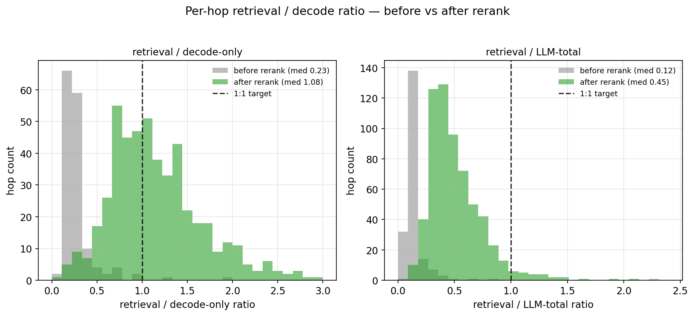
| 지표 | rerank 전 (n=50, 비-rerank) | rerank 후 (n=139) |
|---|---|---|
| hop retrieval / decode-only (median) | 0.23 | 1.08 |
| hop retrieval / LLM-total (median) | 0.12 | 0.45 |
| retrieval / e2e (mean) | 11.1% | 31.3% |
| tool 시간 (median) | 1,202 ms | 6,276 ms |
| EM / F1 | 36.0 / 44.7% | 30.9 / 41.9% |
해석: rerank(BAAI/bge-reranker-base, MPS)가 검색을 정당하게(인위적 지연이 아니라 실제 cross-encoder 연산으로) 무겁게 만들어 decode-only 기준 1:1을 거의 정확히 달성(1.08)했다. LLM-total(prefill 포함) 기준으론 0.45로 아직 절반. ⚠️ EM/F1 열은 표본이 달라(rerank n=139 vs 비-rerank n=50) 정확도 직접 비교가 아니다 — 같은 첫 50문항 기준일 때는 거의 불변이었다. 이 섹션의 핵심 결과는 정확도가 아니라 hop 비율을 1:1로 맞춘 것이며, 표본 139개로도 1.08로 견고하다(hop n=628). candidate_k를 50→45 근처로 줄이면 1.0에 더 정확히 맞출 수 있다.